GO BACK
| Note on Weinberg's textbooks
on QFT |
|
This note is intended to be a comprehensive and pedagogically structured
exposition of Steven Weinberg's The Quantum Theory of Fields
(Volumes I–III), with a particular emphasis on elaborating the
later, more condensed sections of the text. While faithfully following
the logic and organization of Weinberg's original formulation, these
notes aim to make the material more transparent by supplementing concise
derivations, clarifying formal constructions, and expanding on advanced
topics — especially in the second and third volumes, where the
presentation becomes highly compressed and assumes significant
background.
Volume I is treated systematically, with attention to the foundational
structure of relativistic quantum field theory: Lorentz invariance, the
spin-statistics connection, and the representation theory of the
Poincaré group. Volume II receives special emphasis, as the notes
expand Weinberg's treatment of interacting fields, renormalization, and
symmetry constraints by providing detailed step-by-step derivations and
intuitive explanations that are often left implicit in the text. In
Volume III, where the theory of supersymmetry is introduced with great
formal elegance, these notes unpack the algebraic constructions and
superfield formalism with the goal of making the subject accessible
without sacrificing rigor.
Throughout, the objective is not to simplify the material, but to make
its formal structure more transparent, especially in those sections
where Weinberg's exposition is terse or assumes expert familiarity.
These notes are written for mathematically literate readers —
particularly graduate students and researchers — who wish to
engage deeply with Weinberg's approach, and who seek not just to follow
the theory, but to truly understand it.
Notation. The Latin indices such as
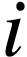, 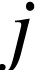, 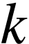, etc., typically
span the three spatial coordinate labels, commonly denoted as 1, 2, 3.
On the other hand, Greek indices like  ,
,  ,
and so forth, usually range over the four spacetime coordinate labels,
specifically 1, 2, 3, 0, where
,
and so forth, usually range over the four spacetime coordinate labels,
specifically 1, 2, 3, 0, where  represents the time
coordinate. Indices that appear twice are usually summed unless
specified otherwise. The spacetime metric, denoted by
represents the time
coordinate. Indices that appear twice are usually summed unless
specified otherwise. The spacetime metric, denoted by  ,
is a diagonal matrix with elements 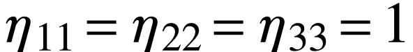 and
,
is a diagonal matrix with elements 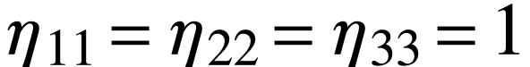 and  .
The d'Alembertian is represented as
.
The d'Alembertian is represented as  and defined by the
equation 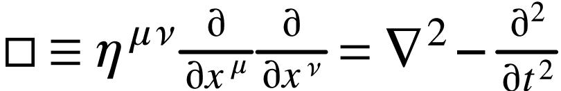, where
and defined by the
equation 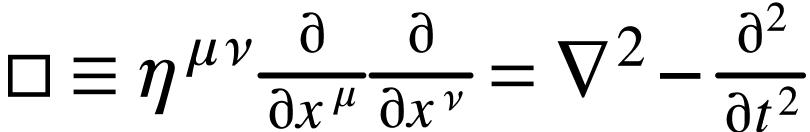, where  is the Laplacian given
by
is the Laplacian given
by  . The ‘ Levi-Civita tensor,’ symbolized
by
. The ‘ Levi-Civita tensor,’ symbolized
by  , is an entirely antisymmetric entity with 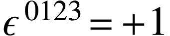.
Spatial vectors in three dimensions are marked by boldface characters. A
unit vector corresponding to any vector is shown with a hat, as in
, is an entirely antisymmetric entity with 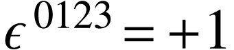.
Spatial vectors in three dimensions are marked by boldface characters. A
unit vector corresponding to any vector is shown with a hat, as in  . A dot over a variable signifies its time derivative. The
Dirac matrices
. A dot over a variable signifies its time derivative. The
Dirac matrices  adhere to
adhere to  , and
, and  , while
, while  . The step function
. The step function  yields a value of +1 when
yields a value of +1 when  and 0 when
and 0 when  .
For a matrix or vector 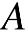, the complex conjugate,
transpose, and Hermitian adjoint are represented by 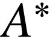,
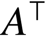, and respectively. The Hermitian
adjoint of an operator
.
For a matrix or vector 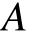, the complex conjugate,
transpose, and Hermitian adjoint are represented by 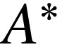,
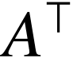, and respectively. The Hermitian
adjoint of an operator  is marked as
is marked as  ,
except when an asterisk emphasizes that a vector or matrix of operators
is not transposed. Terms like +H.c. or +c.c. appended to equations
indicate the addition of the Hermitian adjoint or complex conjugate of
preceding terms. A Dirac spinor
,
except when an asterisk emphasizes that a vector or matrix of operators
is not transposed. Terms like +H.c. or +c.c. appended to equations
indicate the addition of the Hermitian adjoint or complex conjugate of
preceding terms. A Dirac spinor  with a bar over it is
defined as
with a bar over it is
defined as  . Apart from in Chapter ?, units
are normalized such that 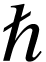 and the speed of light are set
to one. The fine structure constant is represented as
. Apart from in Chapter ?, units
are normalized such that 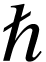 and the speed of light are set
to one. The fine structure constant is represented as  ,
calculated as
,
calculated as  , approximately
, approximately  , where
, where
 is the rationalized charge of the electron.
Parenthetical numbers next to quoted numerical figures signify the
uncertainty in the last digits. Unless otherwise stated, experimental
data is sourced from ‘Review of Particle Properties,’ Phys.
Rev. D50, 1173 (1994).
is the rationalized charge of the electron.
Parenthetical numbers next to quoted numerical figures signify the
uncertainty in the last digits. Unless otherwise stated, experimental
data is sourced from ‘Review of Particle Properties,’ Phys.
Rev. D50, 1173 (1994).
Chapter 1
Relativistic Quantum
Mechanics
The perspective presented argues that quantum field theory exists in its
current form due to its unique capability to harmonize quantum mechanics
with special relativity, under some conditions. Our initial endeavor is
to explore how symmetries, such as Lorentz invariance, manifest within a
quantum context in the following aspects.

1.1Quantum Mechanics
Quantum field theory rests on the same foundational quantum mechanics
developed by Schrödinger, Heisenberg, Pauli, Born, and other
pioneers in 1925–1926.
-
Physical states are represented by rays in complex Hilbert space
(the inner product is denoted be  with the first
slot antilinear (conjugate-linear) and the second slot linear).
Here, a ray is a set of normalized vectors (i.e.
with the first
slot antilinear (conjugate-linear) and the second slot linear).
Here, a ray is a set of normalized vectors (i.e.  )
with
)
with  and
and  belonging to the same ray
if
belonging to the same ray
if  , where
, where  is an arbitrary complex
number with
is an arbitrary complex
number with  .
.
-
Observables are represented by Hermitian operators. A state
represented by a ray  has a definite value
for the observable represented by an operator if
vectors belonging to this ray are eigenvectors of
with eigenvalue :
has a definite value
for the observable represented by an operator if
vectors belonging to this ray are eigenvectors of
with eigenvalue :

-
If a system is in a state represented by a ray , and
an experiment is done to test whether it is in any one of the
different states represented by mutually orthogonal rays  (for instance, by measuring one or more observables) then the
probability of finding it in the state represented by
is
(for instance, by measuring one or more observables) then the
probability of finding it in the state represented by
is

where and  are any vectors belongs
to rays and , respectively.
are any vectors belongs
to rays and , respectively.
1.2Symmetries
A symmetry transformation can be thought of as a shift in perspective
that does not affect the outcomes of potential experiments. If an
observer perceives a system in a state denoted by a ray
or  or
or  ..., a
corresponding observer
..., a
corresponding observer  scrutinizing the same system
would view it in a different state, symbolized by a ray 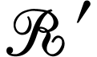
or
scrutinizing the same system
would view it in a different state, symbolized by a ray 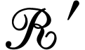
or  or 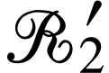..., respectively. However, both
observers must ascertain the same probabilities:
or 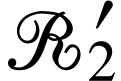..., respectively. However, both
observers must ascertain the same probabilities:
 |
(1.2.1) |
This condition is necessary but not sufficient for a ray
transformation to qualify as a symmetry; additional conditions will be
elaborated upon in the following chapter. Wigner proved a significant
theorem in the early 1930s, stating that for any such transformation
 , an operator 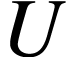 can be defined in the
Hilbert space. If is a vector in ray ,
then 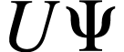 belongs to ray . The operator can either be unitary and linear:
, an operator 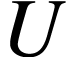 can be defined in the
Hilbert space. If is a vector in ray ,
then 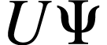 belongs to ray . The operator can either be unitary and linear:
or antiunitary and antilinear:
for all 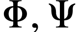 in the Hilbert space.
This finding is called the fundamental theorem of Wigner and the proof
is the following:
The fundamental theorem of Wigner (1931).
Let  be a Hilbert space and let
be a Hilbert space and let
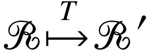
be a bijection satisying
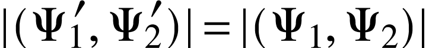
for all rays and ; and vectors  ,
,  ,
,  , and
, and  .
Then there exists an operator acting on
such that
.
Then there exists an operator acting on
such that

for all ray and all  ; and that either
is unitary and linear or antiunitary and antilinear.
; and that either
is unitary and linear or antiunitary and antilinear.
Proof.
As previously stated, the adjoint of a linear operator 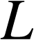
is determined by
 |
(1.2.6) |
This definition does not apply to an antilinear operator since the
right-hand side of (1.2.6) would be linear in  ,
while the left-hand side is antilinear in . For an
antilinear operator , the adjoint is instead specified
as:
,
while the left-hand side is antilinear in . For an
antilinear operator , the adjoint is instead specified
as:
 |
(1.2.7) |
Given this definition, the criteria for either unitarity or
antiunitarity can both be expressed as:
 |
(1.2.8) |
There exists a trivial symmetry transformation ℛ→ℛ,
represented by the identity operator  . This operator is
naturally unitary and linear. Continuity dictates that any symmetry
operation (like a rotation, translation, or Lorentz transformation) that
can be reduced to a trivial transformation by continuously adjusting
certain parameters (such as angles, distances, or velocities) must be
characterized by a linear unitary operator , as opposed
to one that is antilinear and antiunitary. (Symmetries represented by
antiunitary antilinear operators are less common in physics; they all
entail a reversal in the direction of time flow. See Section ?
for more details.)
. This operator is
naturally unitary and linear. Continuity dictates that any symmetry
operation (like a rotation, translation, or Lorentz transformation) that
can be reduced to a trivial transformation by continuously adjusting
certain parameters (such as angles, distances, or velocities) must be
characterized by a linear unitary operator , as opposed
to one that is antilinear and antiunitary. (Symmetries represented by
antiunitary antilinear operators are less common in physics; they all
entail a reversal in the direction of time flow. See Section ?
for more details.)
Specifically, a symmetry transformation that is nearly trivial on an
infinitesimal scale can be depicted by a linear unitary operator that is
infinitesimally close to the identity operator:
Here,  is a real infinitesimal. For to
be both unitary and linear,
is a real infinitesimal. For to
be both unitary and linear,  needs to be Hermitian and
linear, making it a potential observable. In fact, many (if not all)
physical observables, like angular momentum or momentum, are derived
from symmetry transformations in this manner.
needs to be Hermitian and
linear, making it a potential observable. In fact, many (if not all)
physical observables, like angular momentum or momentum, are derived
from symmetry transformations in this manner.
The set of symmetry transformations possesses specific characteristics
that categorize it as a group. If  is a transformation
converting rays to
is a transformation
converting rays to  , and
, and  is another transformation that maps to
is another transformation that maps to  ,
then the outcome of executing both transformations consecutively is yet
another symmetry transformation, denoted as 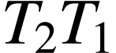, that
transforms into . Additionally, any
symmetry transformation
,
then the outcome of executing both transformations consecutively is yet
another symmetry transformation, denoted as 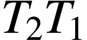, that
transforms into . Additionally, any
symmetry transformation  that changes
into has an inverse, expressed as
that changes
into has an inverse, expressed as  ,
which reverts back to . Moreover, there
exists an identity transformation, 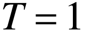, which leaves rays
unaltered.
,
which reverts back to . Moreover, there
exists an identity transformation, 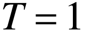, which leaves rays
unaltered.
The unitary or antiunitary operators  that correspond to
these symmetry transformations emulate this group structure, albeit with
added complexity because
that correspond to
these symmetry transformations emulate this group structure, albeit with
added complexity because  operators act on vectors in
Hilbert space instead of on rays. If transforms into , then applying 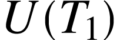 to a
vector in must result in a vector
operators act on vectors in
Hilbert space instead of on rays. If transforms into , then applying 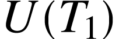 to a
vector in must result in a vector  in . If then maps this ray
to , 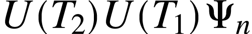 must also belong to ,
as must 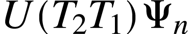. Therefore, the vectors can only differ by a
phase factor
in . If then maps this ray
to , 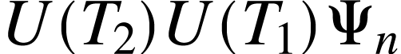 must also belong to ,
as must 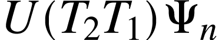. Therefore, the vectors can only differ by a
phase factor  , as given by:
, as given by:
 |
(1.2.10) |
Moreover, barring a notable exception, the linearity (or antilinearity)
of specifies that these phases are state-independent.
To prove this, let us consider two non-proportional vectors  and
and  and apply Equation (1.2.10) to the
state:
and apply Equation (1.2.10) to the
state:
Every unitary or antiunitary operator has an inverse (its adjoint),
which is also either unitary or antiunitary. Upon left-multiplying
Equation (1.2.11) by  , we arrive at:
, we arrive at:
As and are linearly independent, it
follows that
 |
(1.2.13) |
Consequently, the phase in Equation (1.2.10) is
state-independent, leading to the operator relation:
 |
(1.2.14) |
When 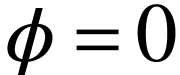, this indicates that constitutes
a representation of the group of symmetry transformations. For arbitrary
phases  , we refer to it as a ‘projective
representation’ or a representation ‘up to a phase’.
Whether the Lie group structure allows for state vectors to furnish an
ordinary or projective representation can not be inferred from the group
structure alone but will become apparent later.
, we refer to it as a ‘projective
representation’ or a representation ‘up to a phase’.
Whether the Lie group structure allows for state vectors to furnish an
ordinary or projective representation can not be inferred from the group
structure alone but will become apparent later.
The exception to the reasoning that concluded in Equation (1.2.14)
lies in the possibility that the system may not be preparable in a state
represented by  . For example, it is generally considered
unfeasible to prepare a system in a superposition of states with total
angular momenta that are integers and half-integers. In such scenarios,
we refer to the presence of a ‘superselection rule’ between
different categories of states. As a result, the phases
could be contingent on which class of states the operators 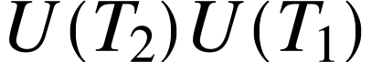
and
. For example, it is generally considered
unfeasible to prepare a system in a superposition of states with total
angular momenta that are integers and half-integers. In such scenarios,
we refer to the presence of a ‘superselection rule’ between
different categories of states. As a result, the phases
could be contingent on which class of states the operators 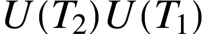
and  are acting upon. Further details about these phases
and projective representations will be discussed in Section ?.
It will be shown that any symmetry group featuring projective
representations can be extended (without altering its physical meaning)
to allow for all its representations to be non-projective, i.e., with
. Until we reach Section ?, we will proceed
with the assumption that such an extension has been applied, and will
take in (1.2.14). Also, the existence of
spinor is partially derived from the phase ambiguity that arises when
taking absolute values and the fact that the homotopy class of the
homogeneous Lorentz group.
are acting upon. Further details about these phases
and projective representations will be discussed in Section ?.
It will be shown that any symmetry group featuring projective
representations can be extended (without altering its physical meaning)
to allow for all its representations to be non-projective, i.e., with
. Until we reach Section ?, we will proceed
with the assumption that such an extension has been applied, and will
take in (1.2.14). Also, the existence of
spinor is partially derived from the phase ambiguity that arises when
taking absolute values and the fact that the homotopy class of the
homogeneous Lorentz group.
In physics, a specific type of group known as a connected Lie group
holds special significance. These are groups comprised of
transformations  , defined by a finite collection of
real, continuous parameters, symbolized as
, defined by a finite collection of
real, continuous parameters, symbolized as  . Each group
element is linked to the identity element through a continuous path
within the group itself. The multiplication rule for the group is
expressed as
. Each group
element is linked to the identity element through a continuous path
within the group itself. The multiplication rule for the group is
expressed as
 |
(1.2.15) |
where  is a function of both 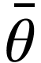 and
is a function of both 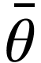 and  . If
. If  denotes the coordinates of the
identity, then
denotes the coordinates of the
identity, then
must hold true. In the case of such continuous groups, the
transformations must be represented in the physical Hilbert space by
unitary operators , rather than antiunitary ones. These
unitary operators, at least in a finite vicinity of the identity, can be
expressed by a power series as
 |
(1.2.17) |
Here,  , and so on, are Hermitian operators independent
of . Assuming that provides a standard
(non-projective) representation of the transformation group, meaning
, and so on, are Hermitian operators independent
of . Assuming that provides a standard
(non-projective) representation of the transformation group, meaning
we can expand this in terms of and  . In
accordance with Equation (1.2.16), the second-order
expansion of should be
. In
accordance with Equation (1.2.16), the second-order
expansion of should be
 |
(1.2.19) |
Here,  are real coefficients. Note that the presence of
any or
are real coefficients. Note that the presence of
any or  terms would be in conflict with
Equation (1.2.16). Following this, Equation (1.2.18)
can be articulated as:
terms would be in conflict with
Equation (1.2.16). Following this, Equation (1.2.18)
can be articulated as:
On both sides of Equation (1.2.20), terms of order 1, , , , and
correspond without issue. However, when focusing on the  terms, a non-trivial condition emerges:
terms, a non-trivial condition emerges:
 |
(1.2.21) |
This reveals that if we know the group structure, specifically the
function 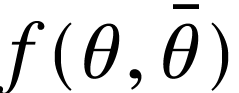 and its corresponding quadratic coefficient
, we can determine the second-order terms of
using the first-order generators  . However, there's a
requirement for consistency: the operator
. However, there's a
requirement for consistency: the operator  has to be
symmetric in
has to be
symmetric in  and
and  , as it's the second
derivative of with respect to
, as it's the second
derivative of with respect to  and . Therefore, Equation (1.2.21) necessitates that
and . Therefore, Equation (1.2.21) necessitates that
 |
(1.2.22) |
where  are a set of real constants termed as structure
constants, defined by
are a set of real constants termed as structure
constants, defined by
 |
(1.2.23) |
This kind of commutation relationship is termed a Lie algebra. In a
later section, we will essentially demonstrate that this commutation
relation (1.2.22) is the sole condition needed to
perpetuate this computation. In other words, the complete power series
for can be generated from an endless chain of equations
like Equation (1.2.21), as long as we are aware of the
first-order terms, namely the generators . While this
does not mean operators are uniquely identified for all
based solely on , it does signify that
they are uniquely specified within a finite vicinity of the identity
coordinate , such that Equation (1.2.15)
holds true if  and lie within this
region. The discussion about extending this to all will
take place in a subsequent section.
and lie within this
region. The discussion about extending this to all will
take place in a subsequent section.
There is a particular scenario of considerable relevance that will recur
frequently in our discussions. Assume the function is
simply additive for some or all of the coordinates , as
expressed by:
 |
(1.2.24) |
This situation is applicable, for example, in the context of spacetime
translations or for rotations about a single fixed axis (but not for
both simultaneously). In this special case, the coefficients
from Equation (1.2.19) become zero, and likewise, the
structure constants in Equation (1.2.23) also vanish.
Consequently, the generators are commutative, denoted by:
 |
(1.2.25) |
Such a group is termed as Abelian. Under these conditions, computing
for all becomes straightforward.
According to Equations (1.2.18) and (1.2.24),
for any integer 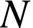, we can express:

By taking the limit as approaches infinity and
retaining only the first-order term in 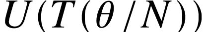, we obtain:

and consequently,
1.3Quantum Lorentz
Transformations
Einstein's principle of relativity asserts the equivalence of specific
'inertial' frames of reference, setting it apart from the Galilean
principle of relativity adhered to by Newtonian mechanics. The
distinction comes from the transformation equations that link coordinate
systems across different inertial frames. Given that 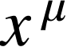
represents the coordinates in one inertial frame—where  are Cartesian spatial coordinates and
are Cartesian spatial coordinates and  is a time
coordinate (assuming the speed of light equals one)—the
coordinates
is a time
coordinate (assuming the speed of light equals one)—the
coordinates  in another inertial frame must satisfy:
in another inertial frame must satisfy:
 |
(1.3.1) |
or, alternatively,
 |
(1.3.2) |
In these equations, is a diagonal matrix with elements
defined as:
 |
(1.3.3) |
The summation convention applies: any index like and
in Equation (1.3.2) appearing twice, once
as a superscript and once as a subscript, is summed over.
These transformations have the unique feature that the speed of light
remains consistent—in our chosen units, equal to one—across
all inertial frames. A light wave with unit speed satisfies  ,
or in terms of the equation
,
or in terms of the equation  , which also implies
, which also implies  and thus 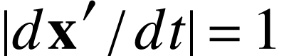.
and thus 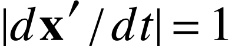.
Any coordinate transformation 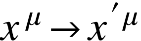 fulfilling Eq. (1.3.2)
is linear, as denoted by:
Here, 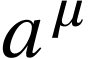 are arbitrary constants, and  is
a constant matrix that meets the criteria:
is
a constant matrix that meets the criteria:
For certain applications, it's advantageous to express the Lorentz
transformation condition using an alternate formulation. The matrix possesses an inverse, designated as 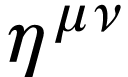, which
coincidentally has the same diagonal components:  and
and
 .
.
By judiciously inserting parentheses and multiplying Eq. (1.3.5)
by  , we get:
, we get:
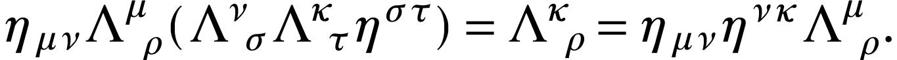
Further multiplying by the inverse of the matrix  yields:
yields:
 |
(1.3.6) |
These transformations constitute a group. When we initially apply a
Lorentz transformation as per Eq. (1.3.4), and then follow
it with another Lorentz transformation  , such that
, such that

we find that the overall transformation effect is identical to
performing a Lorentz transformation  as described by
as described by
Here, it's worth noting that if and
both meet the conditions of Eq. (1.3.5),  will also be a Lorentz transformation. The bar notation is simply used
to distinguish one Lorentz transformation from another. Correspondingly,
the transformations
will also be a Lorentz transformation. The bar notation is simply used
to distinguish one Lorentz transformation from another. Correspondingly,
the transformations  on physical states obey the
composition law
on physical states obey the
composition law
Calculating the determinant of Eq. (1.3.5), we arrive at
 |
(1.3.9) |
This implies that has an inverse, denoted as  ,
which as per Eq. (1.3.5) takes the form
,
which as per Eq. (1.3.5) takes the form
 |
(1.3.10) |
According to Eq. (1.3.8), the inverse of the transformation
turns out to be  , and naturally, the
identity transformation is represented by
, and naturally, the
identity transformation is represented by  .
.
Based on the dialogue in the prior section, the transformations give rise to a unitary linear transformation acting on
vectors in the physical Hilbert space, represented as  .
These operators obey a composition law articulated as
.
These operators obey a composition law articulated as
 |
(1.3.11) |
It's worth noting that to prevent the emergence of a phase factor on the
right-hand side of Eq. (1.3.11), it's generally required to
extend the Lorentz group. The suitable extension for accomplishing this
is discussed in Section ?.
The complete set of transformations is formally
referred to as the inhomogeneous Lorentz group, also known as the
Poincaré group. This group has several significant subgroups.
First, transformations with 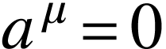 naturally constitute a
subgroup, described by
 |
(1.3.12) |
which is termed the homogeneous Lorentz group. Additionally, from Eq.
(1.3.9), it's evident that  can be either
can be either
 or
or  ; transformations having
; transformations having  inherently make up a subgroup of either the homogeneous or inhomogeneous
Lorentz groups. Further scrutiny of the 00-components of Eqs. (1.3.5)
and (1.3.6) yields
inherently make up a subgroup of either the homogeneous or inhomogeneous
Lorentz groups. Further scrutiny of the 00-components of Eqs. (1.3.5)
and (1.3.6) yields
 |
(1.3.13) |
where ranges over 1, 2, and 3. This shows that either
 or
or  . Transformations where
constitute a subgroup. Observe that if 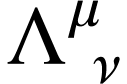 and
. Transformations where
constitute a subgroup. Observe that if 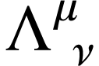 and  are two such matrices 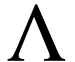, then
are two such matrices 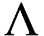, then

According to Eq. (1.3.13), the three-vector  has a length of 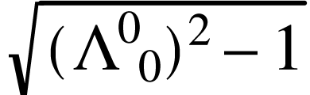, and similarly, the three-vector 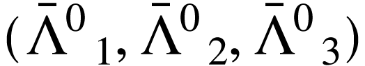 has a length of
has a length of 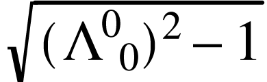, and similarly, the three-vector 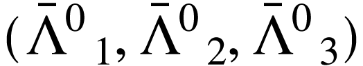 has a length of  . Therefore, the scalar
product of these two three-vectors has an upper limit given by
. Therefore, the scalar
product of these two three-vectors has an upper limit given by
 |
(1.3.14) |
leading to

This subgroup, characterized by and ,
is identified as the proper orthochronous Lorentz group. As one cannot
smoothly transition from to  , or from
to , any Lorentz transformation derived
from the identity through a continuous variation of parameters must
share the same sign for and
, or from
to , any Lorentz transformation derived
from the identity through a continuous variation of parameters must
share the same sign for and  as the
identity, and thus must be a member of the proper orthochronous Lorentz
group.
as the
identity, and thus must be a member of the proper orthochronous Lorentz
group.
Every Lorentz transformation falls into one of two categories: it is
either proper and orthochronous, or it can be expressed as the
composition of an element from the proper orthochronous Lorentz group
and one of the discrete transformations  or
or  or
or  . Here, represents the space
inversion, which has non-zero elements given by
. Here, represents the space
inversion, which has non-zero elements given by
 |
(1.3.15) |
while stands for the time-reversal matrix, with
non-zero elements defined as
Therefore, a comprehensive understanding of the entire Lorentz group can
be achieved by studying its proper orthochronous subgroup, along with
the concepts of space inversion and time-reversal. The exploration of
space inversion and time-reversal will be carried out separately in
Section ?. Until that point, our focus will remain on
either the homogeneous or inhomogeneous proper orthochronous Lorentz
group.
1.4The Poincaré
Algebra
As discussed in Section 1.2, many essential attributes of
any Lie symmetry group are encapsulated in the properties of the
elements in the vicinity of the identity element. In the context of the
inhomogeneous Lorentz group, the identity transformation is given by
 and . Therefore, we aim to explore
transformations that can be written as
and . Therefore, we aim to explore
transformations that can be written as
 |
(1.4.1) |
where both  and
and  are infinitesimal. The
Lorentz condition, expressed as equation (1.3.5), can be
rewritten as
are infinitesimal. The
Lorentz condition, expressed as equation (1.3.5), can be
rewritten as

In this book, we adopt the convention that indices can be raised or
lowered by contracting with or :
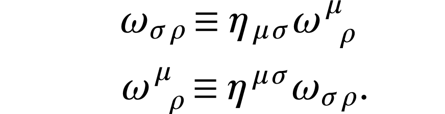
If we retain only the first-order terms in  in the
Lorentz condition (1.3.5), we find that this condition
simplifies to the antisymmetry of
in the
Lorentz condition (1.3.5), we find that this condition
simplifies to the antisymmetry of  :
:
 |
(1.4.2) |
An antisymmetric second-rank tensor in four dimensions has  independent components. Coupled with the four components of ,
an inhomogeneous Lorentz transformation is thus characterized by
independent components. Coupled with the four components of ,
an inhomogeneous Lorentz transformation is thus characterized by  parameters.
parameters.
Because maps any ray onto itself, it must be
proportional to the unit operator, and by a choice of phase may be made
equal to it. Excluding the presence of superselection rules, we can
eliminate the chance that this proportionality factor varies depending
on the state acted upon by . This exclusion follows the
same logic we applied in Section 1.2 to dismiss the idea
that phases in projective representations of symmetry groups might
depend on the states they act upon. In cases where superselection rules
are relevant, it could be necessary to adjust the phase factors of depending on the sector it acts on.
For an infinitesimal Lorentz transformation as described by equation (1.4.1),  must be equal to the unit operator
must be equal to the unit operator
 augmented by terms that are linear in
and
augmented by terms that are linear in
and  . We express this relationship as
. We express this relationship as
In this equation,  and
and  are operators
that are independent of
are operators
that are independent of  and , and the
ellipsis signifies terms of higher order in and/or . For to be unitary, operators
and must be Hermitian:
and , and the
ellipsis signifies terms of higher order in and/or . For to be unitary, operators
and must be Hermitian:
 |
(1.4.4) |
(Yes, the generators of boosts are observables.) Given that
is antisymmetric, its coefficient can also be taken to
be antisymmetric:
As we will elaborate on later,  , and
are the components of the momentum operators;
, and
are the components of the momentum operators;  , and
, and  are the angular momentum vector components; and
are the angular momentum vector components; and  is the energy operator or Hamiltonian. These identifications of
angular-momentum generators are necessitated by the commutation
relations of
is the energy operator or Hamiltonian. These identifications of
angular-momentum generators are necessitated by the commutation
relations of  . However, the commutation relations don't
prescribe a definite sign for
. However, the commutation relations don't
prescribe a definite sign for  and
and  ,
making the sign choice for the
,
making the sign choice for the  term in equation (1.4.3) a matter of convention. The alignment of this choice
with the standard definition of the Hamiltonian will be
clarified in Section ?.
term in equation (1.4.3) a matter of convention. The alignment of this choice
with the standard definition of the Hamiltonian will be
clarified in Section ?.
We turn our attention to the Lorentz transformation characteristics of
and . We focus on the composite
expression

where and are parameters of a new
transformation, distinct from and .
According to Equation (1.3.11), the operation
results in  , signifying that
, signifying that  serves as
the inverse of
serves as
the inverse of  . Consequently, from (1.3.11),
we obtain:
. Consequently, from (1.3.11),
we obtain:
To the first order in and , this leads
to:
By matching the coefficients of and on
both sides of the equation and employing (1.3.10), we
arrive at:
In the case of homogeneous Lorentz transformations where ,
these transformation laws simply indicate that behaves
as a tensor and as a vector. For pure translations,
where  , these rules convey that remains
invariant under translation, while does not.
Specifically, the alteration in the spatial components of
due to a spatial translation corresponds to the conventional change in
angular momentum when the point of reference for measuring angular
momentum is shifted.
, these rules convey that remains
invariant under translation, while does not.
Specifically, the alteration in the spatial components of
due to a spatial translation corresponds to the conventional change in
angular momentum when the point of reference for measuring angular
momentum is shifted.
Next, we consider the application of rules (1.4.8) and (1.4.9) to an infinitesimal transformation. Specifically, we
take and , where the infinitesimals
and are not related to the earlier
and . Utilizing Equation (1.4.3)
and retaining only first-order terms in and ,
Equations (1.4.8) and (1.4.9) simplify to:
By isolating the coefficients of and
on both sides of these equations, we derive the commutation relations:
 |
|
|
(1.4.12) |
|
|
|
(1.4.13) |
|
|
 |
(1.4.14) |
These equations define the Lie algebra of the Poincaré group.
In quantum mechanics, particular importance is given to those operators
that are conserved, meaning they commute with the energy operator  . A review of Equations (1.4.13) and (1.4.14)
reveals that these conserved operators include the momentum three-vector
. A review of Equations (1.4.13) and (1.4.14)
reveals that these conserved operators include the momentum three-vector
 |
(1.4.15) |
and the angular-momentum three-vector
 |
(1.4.16) |
as well as the energy itself. The other generators
constitute what is termed the 'boost' three-vector
 |
(1.4.17) |
These are not conserved, which is why their eigenvalues are not employed
to characterize physical states. Expressed in a three-dimensional
notation, the commutation relations (1.4.12), (1.4.13),
and (1.4.14) can be represented as:
|
|
 |
(1.4.18) |
|
|
 |
(1.4.19) |
|
|
 |
(1.4.20) |
|
|
 |
(1.4.21) |
|
|
 |
(1.4.22) |
|
|
 |
(1.4.23) |
|
|
|
(1.4.24) |
Here,  take the values 1, 2, and 3, and
take the values 1, 2, and 3, and  is the completely antisymmetric quantity where
is the completely antisymmetric quantity where  . The
commutation relation (1.4.18) is identified as belonging to
the angular-momentum operator.
. The
commutation relation (1.4.18) is identified as belonging to
the angular-momentum operator.
Let us prove (1.4.22) and (1.4.24). From , (1.4.13), (1.4.15), and (1.4.17),
we have

The subgroup of pure translations  is a part of the
inhomogeneous Lorentz group, and its group multiplication rule, as
defined by (1.3.7), is
is a part of the
inhomogeneous Lorentz group, and its group multiplication rule, as
defined by (1.3.7), is
 |
(1.4.25) |
This multiplication rule is additive, similar to what is described in
Equation (1.2.24). Employing Equation (1.4.3)
and revisiting the arguments that led to Equation (1.2.26),
we determine that finite translations in the physical Hilbert space are
represented as
 |
(1.4.26) |
Likewise, a rotation  through an angle
through an angle  around the direction specified by
around the direction specified by  is represented in the
physical Hilbert space as
is represented in the
physical Hilbert space as
 |
(1.4.27) |
Contrasting the Poincaré algebra with the Lie algebra of the
Galilean group, the symmetry group for Newtonian mechanics, offers
fascinating insights. While it is possible to derive the Galilean
algebra beginning with its transformation rules and using the same
methodology we used for the Poincaré algebra, a simpler path
exists. Since we already possess Eqs. (1.4.18)-(1.4.24),
we can more conveniently obtain the Galilean algebra as the
Inönü-Wigner contraction of the Poincaré algebra in the
low-velocity limit. For a set of particles with an average mass  and velocity
and velocity  , we anticipate the momentum
and angular-momentum operators to be of the order ,
, we anticipate the momentum
and angular-momentum operators to be of the order ,  . On the flip side, the energy operator is
composed of a total mass
. On the flip side, the energy operator is
composed of a total mass  and a non-mass energy (kinetic and potential), which are of the order
and a non-mass energy (kinetic and potential), which are of the order  ,
,
 . Examining Eqs. (1.4.18)-(1.4.24)
reveals that in the limit where , the commutation
relations simplify to:
. Examining Eqs. (1.4.18)-(1.4.24)
reveals that in the limit where , the commutation
relations simplify to:

where scales as  . It's noteworthy that
in Hilbert space, the sequence of operations involving a translation
. It's noteworthy that
in Hilbert space, the sequence of operations involving a translation
 and a 'boost'
and a 'boost'  does not yield the
expected transformation
does not yield the
expected transformation  . Instead, we have:
. Instead, we have:
The emergence of the phase factor  indicates that we are
dealing with a projective representation, which comes with a
superselection rule that precludes the mixing of states with different
masses. In this aspect, the mathematical framework of the
Poincaré group is less complex than that of the Galilean group.
Nonetheless, it is entirely feasible to extend the Galilean group
formally by introducing an additional generator to its Lie algebra. This
new generator would commute with all existing generators and have
eigenvalues corresponding to the masses of the different states. In such
a scenario, physical states would be represented through an ordinary,
rather than projective, representation of the augmented symmetry group.
While this might seem like a minor change in notation, it effectively
eliminates the necessity for a mass superselection rule within the
reinterpreted Galilean group.
indicates that we are
dealing with a projective representation, which comes with a
superselection rule that precludes the mixing of states with different
masses. In this aspect, the mathematical framework of the
Poincaré group is less complex than that of the Galilean group.
Nonetheless, it is entirely feasible to extend the Galilean group
formally by introducing an additional generator to its Lie algebra. This
new generator would commute with all existing generators and have
eigenvalues corresponding to the masses of the different states. In such
a scenario, physical states would be represented through an ordinary,
rather than projective, representation of the augmented symmetry group.
While this might seem like a minor change in notation, it effectively
eliminates the necessity for a mass superselection rule within the
reinterpreted Galilean group.
1.5One-Particle States
We turn our attention to the categorization of single-particle states
based on their transformation properties under the inhomogeneous Lorentz
group.
Given that the components of the energy-momentum four-vector commute
among themselves, it is logical to represent physical state-vectors
using eigenvectors of the four-momentum. To do this, we introduce a
label to account for any additional degrees of freedom,
leading us to consider state-vectors such that
For more complex states, like those comprising multiple free particles,
the label would need to accommodate both continuous and
discrete values. In this discussion, we are focusing solely on
one-particle states, whose definition includes that the label
is purely discrete. It is worth noting that specific bound states of two
or more particles, like the ground state of a hydrogen atom, are also
considered one-particle states in this context. While such states are
not elementary particles, the distinction between composite and
elementary particles is irrelevant for our current purposes.
Equations (1.5.1) and (1.4.26) inform us about
the transformation behavior of these states under homogeneous Lorentz
transformations.
Applying equation (1.4.9), we find that when a quantum
homogeneous Lorentz transformation  or equivalently
or equivalently  acts on , it yields a four-momentum
eigenvector with eigenvalue
acts on , it yields a four-momentum
eigenvector with eigenvalue  :
:
Therefore,  must be expressible as a linear combination
of state-vectors
must be expressible as a linear combination
of state-vectors  :
:
Generally, one might be able to construct suitable linear combinations
of such that the matrix becomes
block-diagonal. In other words, with
values within a single block could constitute a representation of the
inhomogeneous Lorentz group on their own. It makes sense to associate
the states of a particular particle type with components of an
irreducible representation of the inhomogeneous Lorentz group, meaning
it can't be further broken down in this manner.
It should be noted that different types of particles may be related to
isomorphic representations, which means their matrices
could be identical or transformed into one another by a similarity
transformation. In certain scenarios, particle types might be defined as
irreducible representations of larger groups, which include the
inhomogeneous proper orthochronous Lorentz group as a subgroup. For
example, for massless particles whose interactions are invariant under
space inversion, it's common to treat all components of an irreducible
representation of the inhomogeneous Lorentz group as a single particle
type.
The next step in our investigation is to elucidate the structure of the
coefficients in irreducible representations of the
inhomogeneous Lorentz group.
For our objectives, it's crucial to recognize that the only functions of
 left invariant by all proper orthochronous Lorentz
transformations are the invariant square
left invariant by all proper orthochronous Lorentz
transformations are the invariant square  ,
and for
,
and for  , also the sign of . Therefore,
for each specific value of
, also the sign of . Therefore,
for each specific value of  , and when ,
each sign of , we can select a 'standard' four-momentum
denoted as
, and when ,
each sign of , we can select a 'standard' four-momentum
denoted as  . Any within this category
can then be represented as
. Any within this category
can then be represented as
 |
(1.5.4) |
where  is a particular standard Lorentz transformation
depending on and, implicitly, on our chosen standard
. Consequently, the states having
momentum
is a particular standard Lorentz transformation
depending on and, implicitly, on our chosen standard
. Consequently, the states having
momentum  can be defined as
can be defined as
 |
(1.5.5) |
where  is a numerical normalization factor, the
specifics of which will be determined later. Up to this juncture, no
details have been provided about how the labels are
connected across varying momenta; Equation (1.5.5) now
addresses this absence.
is a numerical normalization factor, the
specifics of which will be determined later. Up to this juncture, no
details have been provided about how the labels are
connected across varying momenta; Equation (1.5.5) now
addresses this absence.
When applying an arbitrary homogeneous Lorentz transformation
to equation (1.5.5), we obtain:
The purpose of this last step is to show that the Lorentz transformation
 first maps to , then
to , and finally back to . This
transformation belongs to a subgroup within the homogeneous Lorentz
group, characterized by Lorentz transformations
first maps to , then
to , and finally back to . This
transformation belongs to a subgroup within the homogeneous Lorentz
group, characterized by Lorentz transformations  that
keep invariant:
that
keep invariant:
 |
(1.5.7) |
This subgroup is termed the little group. For any that
satisfies Equation (1.5.7), we find that:
 |
(1.5.8) |
The coefficients  serve as a representation of the
little group. Specifically, for any elements ,
the relationship
serve as a representation of the
little group. Specifically, for any elements ,
the relationship

is satisfied, and hence
 |
(1.5.9) |
Particularly, we can apply Equation (1.5.8) to the
little-group transformation
 |
(1.5.10) |
resulting in:

or, recalling definition (1.5.5):
Aside from normalization issues, the task of identifying the
coefficients  in transformation rule (1.5.3)
has now been distilled down to finding the representations of the little
group. This technique, which involves deriving representations of a
larger group like the inhomogeneous Lorentz group from the
representations of its little group, is known as the method of induced
representations.
in transformation rule (1.5.3)
has now been distilled down to finding the representations of the little
group. This technique, which involves deriving representations of a
larger group like the inhomogeneous Lorentz group from the
representations of its little group, is known as the method of induced
representations.
|
Standard |
Little Group |
(a)  |
 |
|
| (b) |
 |
|
(c)  , ,  |
 |
|
| (d) , |
 |
|
| (e) |
 |
 |
| (f) |
|
|
|
|
|
Table 1.5.1 provides a suitable selection for the standard
four-momentum along with the associated little group
for different categories of four-momenta.
Out of the six categories of four-momenta, only types (a), (c), and (f)
have any recognized implications for physical states. For class (f)
— where —it pertains to the vacuum state,
which is essentially unchanged by . Our subsequent
discussion will be confined to cases (a) and (c), which correspond to
particles with mass  and massless particles,
respectively.
and massless particles,
respectively.
Now is an appropriate time to discuss the normalization of these states.
Employing the standard orthonormalization procedure from quantum
mechanics, we can select states with standard momentum
to be orthonormal as denoted by the equation:
 |
(1.5.12) |
(Let me remark that is the standard momentum and runs over all possibilities such that  , so,
for example, we can not use (1.5.12) to calculate
, so,
for example, we can not use (1.5.12) to calculate  .
Also and are normalized such that (1.5.12) holds) The presence of the delta function arises
because and are eigenstates of a
Hermitian operator with eigenvalues
.
Also and are normalized such that (1.5.12) holds) The presence of the delta function arises
because and are eigenstates of a
Hermitian operator with eigenvalues  and
and  ,
respectively. As a direct outcome, the representation of the little
group in Eqs. (1.5.8) and (1.5.11) must be
unitary.
,
respectively. As a direct outcome, the representation of the little
group in Eqs. (1.5.8) and (1.5.11) must be
unitary.
 |
(1.5.13) |
For  and , the little groups
and do not possess any non-trivial finite-dimensional
unitary representations. Hence, if there were states with a specific
momentum having or
that non-trivially transform under the little group, an infinite number
of such states would be required.
and , the little groups
and do not possess any non-trivial finite-dimensional
unitary representations. Hence, if there were states with a specific
momentum having or
that non-trivially transform under the little group, an infinite number
of such states would be required.
Regarding the scalar products for generic momenta, the unitarity of the
operator as expressed in Eqs. (1.5.5) and
(1.5.11) provides the following formula for the scalar
product:

Here, (Hence,  ). (Let me remark that
). (Let me remark that
 here is just the one in
here is just the one in

although here we use

This is correct as
which gives

thereby getting

Since  as well, the delta function is
proportional to
as well, the delta function is
proportional to  . The presence of
. The presence of  implies that only the coefficient when
implies that only the coefficient when  matters, as
otherwise the inner product vanishes. Hence, with
matters, as
otherwise the inner product vanishes. Hence, with  , we
have
, we
have
 |
(1.5.14) |
The next step involves determining the proportionality factor that links
to  .
.
When integrating an arbitrary scalar function  over
four-momenta subject to and
(corresponding to cases (a) or (c)), the Lorentz-invariant integral
takes the form:
over
four-momenta subject to and
(corresponding to cases (a) or (c)), the Lorentz-invariant integral
takes the form:
Here,  is the step function:
is the step function:  for and
for and  for
for  .
.
When integrating over the 'mass shell'  , the invariant
volume element becomes:
, the invariant
volume element becomes:
By the definition of the delta function,

we find that the invariant delta function is
Given that  and are connected to
and are connected to  and through a Lorentz transformation , we arrive at the following equation:
and through a Lorentz transformation , we arrive at the following equation:

Consequently, the scalar product becomes:
 |
(1.5.17) |
The normalization constant is occasionally set to  . However, in doing so, one would need to account for the
. However, in doing so, one would need to account for the
 term in scalar products. In this context, we will use
the more common convention where:
term in scalar products. In this context, we will use
the more common convention where:
 |
(1.5.18) |
With this choice, the scalar product simplifies to:
 |
(1.5.19) |
Next, we turn our attention to the two physically relevant cases:
particles with mass and particles with zero mass.
1.5.1Mass Positive-Definite
In this context, the little group is represented by the
three-dimensional rotation group. Its unitary representations can be
decomposed into a direct sum of irreducible unitary representations,
denoted by  , having dimensions of
, having dimensions of  ,
where takes values 0,
,
where takes values 0,  , 1, etc. These
representations can be constructed from the standard matrices for
infinitesimal rotations
, 1, etc. These
representations can be constructed from the standard matrices for
infinitesimal rotations  , where
, where  is
infinitesimal. The representation is given by:
is
infinitesimal. The representation is given by:
|
|
|
(1.5.20) |
|
|
 |
|
|
|
 |
(1.5.21) |
|
|
 |
(1.5.22) |
where varies over the set  .
gives the component of angular momentum in the three-axis. For a
particle having mass and spin ,
Equation (1.5.11) is transformed to:
.
gives the component of angular momentum in the three-axis. For a
particle having mass and spin ,
Equation (1.5.11) is transformed to:
 |
(1.5.23) |
Here, the little-group element — often referred
to as the Wigner rotation — is given by Equation (1.5.10)
as:
Let

be the Lorentz factor (w.r.t the particle with 4-momentum ).
Note that the relativistic mass with 4-momentum (w.r.t
the particle with 4-momentum ) is

Hence, together with

we can rewrite the Lorentz factor to be

which gives

Let

Then a choice of that take  to could be
to could be

Then from this we can determine the Wigner rotation and hence the
representation with spin ,  .
.
1.5.2Mass Zero
Note that an infinitesimal rotation around the two-axis  followed by an infinitesimal boost along the one-axis
leaves
followed by an infinitesimal boost along the one-axis
leaves  unchange as
unchange as

Also an infinitesimal rotation around the two-axis  followed by an infinitesimal boost along the one-axis
leaves unchange. And clearly, an infinitesimal rotation
around the three axis
followed by an infinitesimal boost along the one-axis
leaves unchange. And clearly, an infinitesimal rotation
around the three axis  leaves
leaves  . Hence,
an infinitesimal small group transformation can be rewritten as
. Hence,
an infinitesimal small group transformation can be rewritten as

where

We see that the commutators for these generators are

Hence, we simultaneously diagonalized and  by their eigenstates
by their eigenstates  such that
such that

However, if one of and is not zero,
then we can find a continuum of spectrum of and , i.e.

where

which contradicts to our assumption that is of discrete
(experiment does not find a continuum of for
one-particle states). Hence, for physical states, we must have

(For the case when or  , see
arXiv:1302.1198.) Hence, for a physical state , we must
have
, see
arXiv:1302.1198.) Hence, for a physical state , we must
have
Here is assumed to be the eigenvalue of
(now that  , is a common eigenstate for
both , , and , although
neither and commute nor
and ), such that
, is a common eigenstate for
both , , and , although
neither and commute nor
and ), such that
Note that is in the three-axis, gives
the component of angular momentum in the direction of motion.
is called the helicity.
We are now ready to find the representation of the little group.

Hence,

Therefore,

where  is determined by
is determined by

Instead of unitary operator acting on the Hilbert space, we prefer using
the following Lorentz transformation identity.
where
where
On the other hand,
where  .
.
Therefore,
Hence,
where we choose

to take  to , where
to , where
is a pure boost along the three-direction and
with
is a pure rotation that takes the three axis into the
direction of  .
.
Chapter 2
Quantum
Electrodynamics
2.1Gauge Invariance
In constructing covariant free fields for massless particles with
helicity  (such as photons), one encounters a
significant complication; see Section ?. A field like the
four-potential
(such as photons), one encounters a
significant complication; see Section ?. A field like the
four-potential  , as given by Eq. (?), while
commonly used, does not transform as a true four-vector under Lorentz
transformations. This presents a problem when attempting to write a
Lorentz-covariant quantum field theory. But before diving into this
issue, let's recall that we can define an antisymmetric tensor field
, as given by Eq. (?), while
commonly used, does not transform as a true four-vector under Lorentz
transformations. This presents a problem when attempting to write a
Lorentz-covariant quantum field theory. But before diving into this
issue, let's recall that we can define an antisymmetric tensor field
 for massless spin-1 particles without difficulty. This
tensor field is related to the four-potential aμ(x)
via the well-known expression (just as in classical electromagnetism):
for massless spin-1 particles without difficulty. This
tensor field is related to the four-potential aμ(x)
via the well-known expression (just as in classical electromagnetism):
However, as shown in Eq. (?), the four-potential
does not transform purely as a four-vector under Lorentz
transformations; rather, it transforms as a four-vector only up to a
gauge transformation. That is, under a Lorentz transformation ,
the field transforms according to
where is a function that depends on the coordinates and
the Lorentz transformation, and represents the gauge freedom inherent in
the theory. This additional gradient term reflects the non-covariant
behavior of under Lorentz transformations, a key
feature of massless vector fields like the photon. The implication here
is profound: even though the field strength itself does
transform covariantly (since it is gauge-invariant), the potential does not. This is a manifestation of the gauge redundancy
present in theories of massless spin-1 fields, such as quantum
electrodynamics (QED).
In the case of massless spin-1 particles, such as photons, a significant
structural limitation arises when attempting to construct covariant
quantum fields. Specifically, it is impossible to build a true Lorentz
four-vector field as a linear combination of creation and annihilation
operators associated only with helicity states. This
stands in sharp contrast to the situation for massive spin-1 particles,
where the field operator — such as the Proca field — can be
constructed from the full set of polarization states  ,
and transforms properly as a four-vector under Lorentz transformations.
,
and transforms properly as a four-vector under Lorentz transformations.
The key issue is that, for massless particles, only the transverse
polarizations with helicities correspond to physical
states. The longitudinal polarization vector, which is essential in the
massive case for forming a complete Lorentz vector, becomes unphysical
as the mass goes to zero. Although the longitudinal component
contributes to the field operator of the massive theory, it ultimately
decouples from physical matrix elements due to current conservation.
However, this decoupling does not remove its mathematical role in
ensuring the Lorentz covariance of the field operator. Therefore, when
taking the massless limit one cannot simply discard the
longitudinal mode without losing the ability to maintain manifest
Lorentz covariance.
This fact manifests clearly in the propagator of a massive vector field.
The propagator for the Proca field takes the form:

and one immediately sees that the second term in the numerator of the
integrand becomes singular as . This divergence is not
merely a technical problem; it reflects a deeper physical truth: the
longitudinal component required to complete the four-vector structure
becomes ill-defined in the massless limit. In other words, the theory
does not admit a smooth transition from the massive to the massless case
at the level of the covariant field operator.
The underlying reason for this difficulty lies in the representation
theory of the Poincaré group. For massive particles, the little
group is , and one can build covariant fields
corresponding to finite-dimensional irreducible representations. In
contrast, for massless particles, the little group is ,
which includes not only helicity (rotations around the direction of
motion) but also “translations” in the plane transverse to
the momentum. These translation-like generators do not act trivially on
the polarization vectors and correspond to gauge transformations in
field-theoretic language. As a result, any attempt to construct a
covariant field from only helicity eigenstates necessarily introduces
gauge redundancy: the field can at best transform covariantly up to a
gauge transformation.
This explains why the four-potential , though commonly
used, does not transform as a true four-vector. Instead, under Lorentz
transformations, it picks up an additional gradient term — a
manifestation of gauge freedom. This is a direct reflection of the
impossibility of representing helicity states within a
true vector representation of the Lorentz group. The singularity in the
propagator at  is thus not an artifact of poor
regularization or bad limits, but a genuine structural signal: it tells
us that the massless theory must be formulated differently — not
through a Proca-like field, but via gauge fields with constrained
degrees of freedom, such as in quantum electrodynamics.
is thus not an artifact of poor
regularization or bad limits, but a genuine structural signal: it tells
us that the massless theory must be formulated differently — not
through a Proca-like field, but via gauge fields with constrained
degrees of freedom, such as in quantum electrodynamics.
We could avoid the complications arising from the non-covariant
transformation properties of the gauge potential by
imposing a strong constraint on the form of the theory: namely, that all
interactions should involve only the field strength tensor  (We use and , instead of
(We use and , instead of  and , for the eletromagnetic potential vector and the
field strength tensor because these are interacting fields.) and its
derivatives, and not
and , for the eletromagnetic potential vector and the
field strength tensor because these are interacting fields.) and its
derivatives, and not  itself. Since is
manifestly gauge invariant under the transformation
itself. Since is
manifestly gauge invariant under the transformation
 |
(2.1.2) |
a theory built entirely from and its derivatives would
automatically be invariant under gauge transformations. It would also
avoid the problem that , as discussed earlier (see Eq.
(?)), transforms only up to a gauge term under Lorentz
transformations.
However, such a restriction would be overly rigid — it does not
describe the most general class of interactions, and crucially, it is
not the structure realized in nature. Physical theories such as quantum
electrodynamics (QED) include interaction terms where
appears explicitly, as in the minimal coupling term

which cannot be written purely in terms of . For this
reason, we do not banish from the theory. Instead, we
retain as a dynamical variable, and impose a
compensating symmetry requirement: that the matter action, which
includes the matter fields and their interaction with the gauge field,
must be invariant under general gauge transformations of the form (2.1.2) at least when the matter fields obey their equations of
motion.
This approach ensures that the unphysical degrees of freedom associated
with the gauge redundancy in do not affect physical
observables, even though itself is not gauge invariant.
If we allow to shift by ∂μϵ(x),
then the variation of  is given formally by:
is given formally by:
This expression arises from a general principle in field theory: when a
functional depends on a field , its variation under a
change in that field is obtained by integrating the functional
derivative times the variation of the field.
To proceed, we apply integration by parts to this expression, under the
assumption that vanishes sufficiently rapidly at
infinity so that boundary terms can be neglected. This gives:
For the action to be gauge invariant, i.e., for  , we
need
, we
need
 |
(2.1.4) |
This is a condition imposed not on , which is arbitrary,
but on the structure of the action itself. It ensures that even though
transforms inhomogeneously under gauge transformations,
the matter action remains invariant. The significance of this condition
will become clearer shortly, once we interpret as the
source current for the gauge field.
In special cases, this condition is trivially satisfied. For example, if
the matter action depends only on the gauge-invariant
tensor  , and not on itself, then the
functional derivative can be computed explicitly using
the chain rule:
, and not on itself, then the
functional derivative can be computed explicitly using
the chain rule:

Using  , we vary each term with respect to .
By definition of functional differentiation,
, we vary each term with respect to .
By definition of functional differentiation,  . When a
derivative acts on the field, the corresponding functional derivative
produces a derivative of the delta function:
. When a
derivative acts on the field, the corresponding functional derivative
produces a derivative of the delta function:  and
similarly
and
similarly  . Subtracting these gives
. Subtracting these gives

Substituting this back into the chain rule and collecting indices, we
obtain

We now integrate by parts in  , moving derivatives off
the delta functions and onto the functional derivatives; surface terms
vanish under standard boundary conditions. Using
, moving derivatives off
the delta functions and onto the functional derivatives; surface terms
vanish under standard boundary conditions. Using  , the
two terms become
, the
two terms become
Because is antisymmetric, the functional derivative
 is also antisymmetric:
is also antisymmetric:  . Using this
antisymmetry to relabel indices, the two terms add to the same structure
and we arrive at
. Using this
antisymmetry to relabel indices, the two terms add to the same structure
and we arrive at
 |
(2.1.5) |
Thus, the functional derivative of the action with respect to
is given by the divergence of a quantity. Taking another divergence
yields:
Therefore, if depends only on , the
condition in Eq. (2.1.4) is satisfied automatically –
gauge invariance is guaranteed by construction. Moreover, Eq. (2.1.5)
is also true when depends only on and
its derivatives. But we omit the calculations.
However, if involves itself, the
expression will generally not be a total derivative,
and hence the vanishing of its divergence becomes a non-trivial
constraint. In such theories, gauge invariance imposes a dynamical
condition on the form of the interaction between matter and gauge fields
— one that is often interpreted (in later steps) as the
conservation of a physical current.
the variation involves derivatives of delta functions,
leading to:


A broad class of theories yielding a conserved current arises from an
internal global symmetry acting on matter fields :
When is constant, the action is invariant; promoting
gives
so on the equations of motion the current is conserved,
The corresponding generator acts on fields as
with time-independent conserved charge
 |
(2.1.10) |
Coupling the conserved current to a vector field gives a
Lorentz-invariant theory if we choose the normalization
which fixes the overall charge units (a common rescaling of all can be absorbed into ).
Equation (2.1.11) is equivalent to the invariance of the
matter action under the local transformations
i.e. gauge invariance of the second kind (the first kind refers to the
global case).
For the gauge field itself we take the standard Maxwell action,
which (up to normalization and total derivatives, and with at most two
derivatives) is the unique local, gauge-invariant quadratic functional
of . Varying the total action with
respect to gives the inhomogeneous Maxwell equations,
together with the homogeneous Bianchi identity,
It is often convenient to derive gauge interactions by
“localizing” a global symmetry. Starting from the global
transformation
we promote it to
If the matter Lagrangian depended only on the fields (no derivatives),
global invariance would imply local invariance automatically. With
derivatives present, the transformation of acquires an
extra term:
To cancel the inhomogeneous piece proportional to ,
introduce a gauge field transforming as
 |
(2.1.20) |
and define the covariant derivative
for which transforms homogeneously. Replacing all by in and adding the gauge
kinetic term (2.1.14) yields a locally gauge-invariant
electrodynamics with universal minimal coupling (2.1.11);
the equations of motion are (2.1.15)–(2.1.16).
2.2Constraints and Gauge
Conditions
In canonical quantization of electrodynamics we meet obstructions absent
for massive vector theories. As usual, define the canonical momentum
conjugate to the four-potential:
Naively one would impose canonical equal-time commutators, but
electrodynamics carries constraints, so the naive set is inconsistent.
The primary constraint follows because the Lagrangian has no
time derivative of :
A secondary constraint arises from the Euler–Lagrange
equations subject to the primary one. Using and the
matter coupling, one finds
where is the conserved matter current. In terms of
canonical matter variables (collecting all charged
fields with charges ),
Differentiating the field equations and using current conservation
yields the identity
which shows that if the secondary constraint holds at one time, it holds
for all times. Thus is not a dynamical degree of
freedom.
Because the theory has a local gauge symmetry, we cannot determine a
unique evolution from initial data unless we fix a gauge by a
finite transformation
and then impose a condition on (examples: Lorenz,
Coulomb, temporal, axial, unitary gauges). For canonical work it is
convenient to adopt the Coulomb gauge,
In the common class of theories where depends on matter
fields, their time-derivatives, and but not on
derivatives of , the only -dependence is
the photon kinetic term . Then the secondary constraint
(2.2.3) is just Gauss's law,
Together with (2.2.6) this yields the Poisson equation for
the nondynamical scalar potential,
Thus is determined instantaneously by the charge
density:
After fixing (2.2.6) the remaining independent degrees of
freedom are the transverse components, while
is an auxiliary field algebraically fixed by (2.2.9).


 represents an arbitrary positive energy, for instance, 1 eV. The
little groups are generally straightforward to understand:
represents an arbitrary positive energy, for instance, 1 eV. The
little groups are generally straightforward to understand:  is the regular three-dimensional rotation group that
comprises Lorentz transformations which keep a zero-momentum
particle stationary. Meanwhile,
is the regular three-dimensional rotation group that
comprises Lorentz transformations which keep a zero-momentum
particle stationary. Meanwhile,  and
and  are Lorentz groups in (2+1)-dimensions and (3+1)-dimensions,
respectively. The group
are Lorentz groups in (2+1)-dimensions and (3+1)-dimensions,
respectively. The group  is the set of
transformations in Euclidean geometry, which includes both
rotations and translations in two dimensions. Its role as the
little group for cases where
is the set of
transformations in Euclidean geometry, which includes both
rotations and translations in two dimensions. Its role as the
little group for cases where  will be elaborated
on later.
will be elaborated
on later.